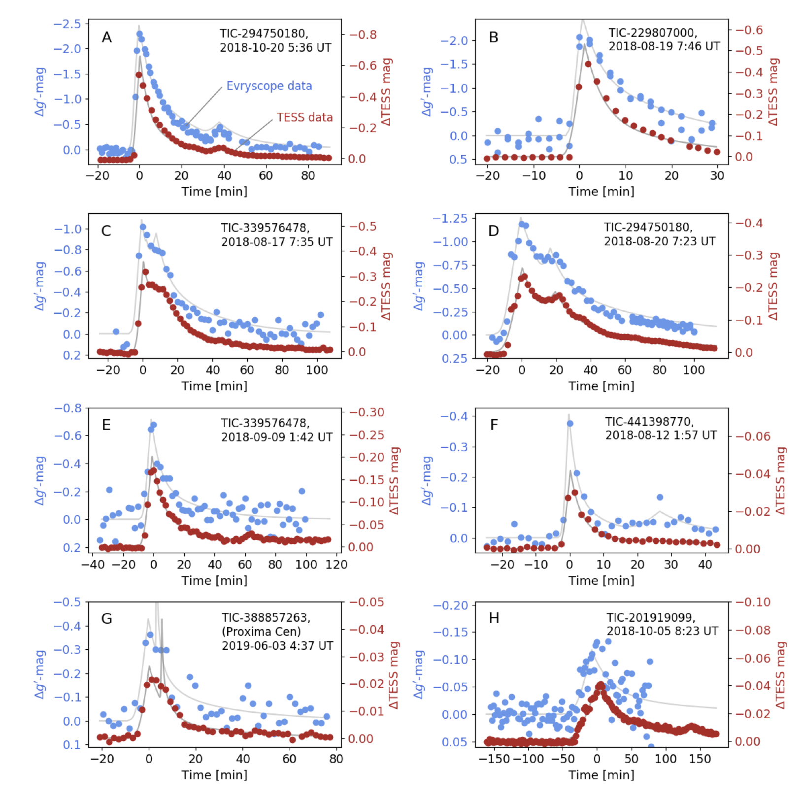
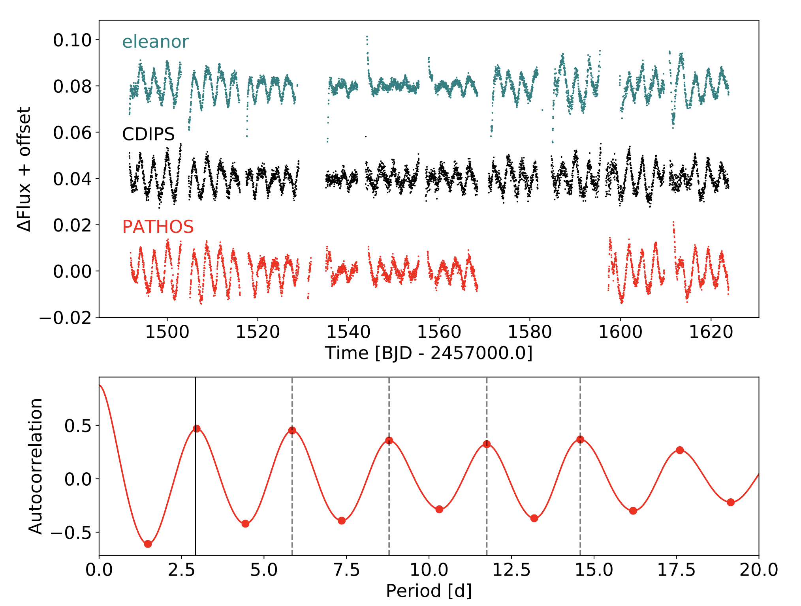

STATUS UPDATE: Check out our latest NASA feature here in which you can see a beautiful northern sky mosaic created by TESS.
Welcome TESS followers to our weekly news bulletin! This week we have three papers from the archive.
EvryFlare III: Temperature Evolution and Habitability Impacts of Dozens of Superflares Observed Simultaneously by Evryscope and TESS (Howard et. al., 2020):
It is thought that superflares may provide the dominant source of biological relevant UV radiation for rocky M-dwarf planets (M-Earths) in the habitable zone. These flares could alter the planets atmosphere and potentially make them more favorable for life. A 9000 K black body has typically been used to approximate the combined line and continuum flare emission. If the superflares are hotter than 9000 K, then the UV emission could be 10 times brighter than current predictions from the optical. It is not known however, how long M-dwarf superflares are above this temperature. To date only a few M-dwarf super flares have been recoded with multi-wavelength high-cadenced observations. This paper doubles the number of events via the use of both TESS and Evryscope data. Measurements from these two facilities, taken simultaneously, has allowed the authors to conduct the first systematic exploration of the temperature evolution of M-dwarf superflares.
The temperatures of 42 superflares from 27 K5-M5 dwarfs are measures using 2 min cadenced data. The authors find that superflare peak temperatures increase with flare energy and impulse, with the time above 14,000K being dependent upon the energy. Of the flares investigated 43% emit above 14,000 K, 23% emit above 20,000 K and 5% emit above 30,000 K. The hottest flare studied by the authors reached 42,000 K. It is estimated that M-Earths orbiting <200 Myr stars typically receive a top-of-atmosphere UV-C flux of ~120 W m^-2 and up to 10^3 W m^-2, 100-1000X the time-averaged XUV flux from Proxima Cen.
Fig 1. Taken from Howard et. al., 2020. 2 min data for the flare events observed with both Evryscope (blue) and TESS (red). Flare fits are shown as grey lines. UT identifiers are approximated from barycentric TESS epochs and may differ by up to 10 min from the exact flare peak time.
Stellar Spins in the Open Cluster NGC 2516 (Healy et. al., 2020):
By measuring the distribution of stellar spin axis orientation in a group of stars with the same age, you can probe the process of star formation. In this paper the authors use TESS photometry, ground based spectroscopy (Gaia-ESO and GALAH surveys), broad-band stellar magnitudes, and Gaia astrometry to measure stellar inclinations for 33 objects in the open cluster NGC 2516, they therefore try to quantify the overall cluster rotation.
The measurements obtained suggest that stellar spins in the cluster are isotropically orientated, but still allowing for the possibility that they are moderately aligned. With an isotropic distribution it would suggest a star-forming environment in which turbulence dominate ordered motion. A moderately aligned distribution means a more substantial contribution from rotation. A 3-D analysis of the clusters internal kinematics also suggests no significant signatures of overall rotation. Within this work the authors also identify evidence of cluster contraction, suggesting possible ongoing mass segregation in NGC 2516.
TOI 540 b: A Planet Smaller than Earth Orbiting a Nearby Rapidly Rotating Low-mass Star (Ment et. al., 2020):
In this paper the authors present the discovery of TOI 540 b, a hot planet orbiting the low-mass star 2MASS J05051443-4756154. The planet has an orbital period P=1.239149 days and a radius of r=0.903±0.052 REarth. Given its mass and radius it is likely a terrestrial planet.
The system is 14.008 pc away with the host star mass and radius estimated as M=0.159 MSun and R=0.1895 RSun. The star has a very short rotational period of Prot =17.4264 hours and correspondingly small Rossby number of 0.007. Using XMM-Newton observations the host star is also seen to have a high X-ray-to-bolometric luminosity ratio of LX/Lbol =0.0028, which is consistent with the X-ray emission being observed at a maximum value of LX/Lbol ≃ 10-3 as predicted for the most rapidly rotating M dwarfs.
The discovery of TOI 540 b is based on precise photometric data from TESS and ground-based follow-up observations by the MEarth team.

Fig 1. Taken from Howard et. al., (2020). Two min data for the flare events observed with both Evryscope (blue) and TESS (red). Flare fits are shown as grey lines. UT identifiers are approximated from barycentric TESS epochs and may differ by up to 10 min from the exact flare peak time.

Fig 2. Taken from Healy et. al., (2020). Top: Sectors 7-11 TESS light curves from eleanor, CDIPS and PATHOS for Gaia DR2 5290728834785867264, a T = 12.37, G = 12.84 Sun-like star. Bottom: Smoothed autocorrelation function of the PATHOS light curve for this star. The first peak (solid line) is located at the rotation period, found to be 2.921 ± 0.048 d. The agreement between the predicted locations of the next four harmonic peaks (dashed lines) and their actual locations indicates a precise period determination. We do not use more than 5 peaks in this analysis to avoid a loss of period accuracy over long lag times.